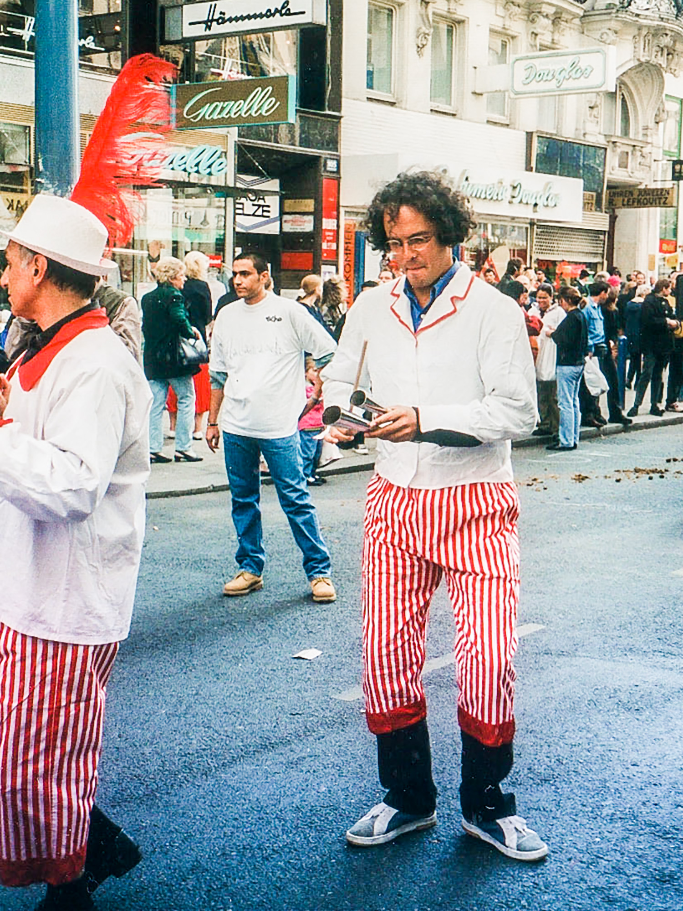

A Vida Artística de Paulo Bittencourt
Nasci em 1966 em Castro, Paraná, mas passei a infância no Rio de Janeiro. Minha mãe levou a mim (e meus três irmãos) à Igreja Adventista. Com 22 anos, deixei de ser ovelha e me converti num livre-pensador.
Sempre gostei de desenhar, fotografar e cantar. O canto acabou se tornando a principal forma de eu me expressar artisticamente.
Estas são apenas algumas das muitas estações artísticas da minha vida.

Fui o baixo dum quarteto gospel do Instituto Adventista Paranaense, um colégio interno na região de Maringá. Nosso quarteto chegou a se apresentar num festival em Curitiba. Eu cantava também no coral desse colégio e era frequentemente convidado a fazer solos (1982).

O mesmo quarteto, com algumas das moças do coral do IAP (1983).
Em 1987, fui estudar Teologia no Instituto Adventista de Ensino, outro colégio interno, em São Paulo, para ser pastor de igreja. Com a cabeça cheia de questionamentos, dois anos e meio depois abandonei os estudos e, com os 600 dólares que eu tinha ganho vendendo bíblias de porta em porta, fui me aventurar na Europa, onde acabei ficando. No IAE, eu cantava no coral, mas também fazia muitos solos. Por pouco, não me tornei o barítono do quarteto Os Arautos do Rei, uma espécie de Os Beatles da Igreja Adventista.
Mudei-me para a Europa em 1989. Após curta estada em Portugal, França, Inglaterra e Alemanha, fui parar na Áustria, onde acabei ficando e, no Konservatorium der Stadt Wien, estudei Canto Lírico (Ópera). Na foto, estou num ensaio do Coral Arnold Schoenberg, para um concerto na Musikverein, em Viena (1994). Com esse coral, apresentei-me também no famoso Carnegie Hall, em Nova Iorque.
Um concerto de músicas de Heitor Villa-Lobos, na Boesendorfer Saal, em Viena, cujo objetivo foi conscientizar o público sobre os problemas enfrentados pelos povos indígenas da Amazônia, em especial os ianomâmis (1996). Cantei Três Poemas Indígenas.

Em 1995, fui contratado pelo maior teatro da língua alemã, o Wiener Burgtheater. Uma das peças de que participei foi apresentada também em Berlim. Na foto, estou num traje da peça Orfeu no Inferno (1996).
Em outro traje da mesma peça.
No camarim do Akademie Theater, em Viena (1997).

Com colegas de trabalho, em outra peça.

Com colegas de trabalho, em outra peça do Akademie Theater (1988). O senhor de óculos foi um ícone do teatro austríaco.

Interpretando Guglielmo, da ópera Così Fan Tutte, de Wolfgang Amadeus Mozart, no Stadttheater, em Baden, Áustria (1999).
Tocando agogô, num desfile de música folclórica de diferentes países, em Viena (1996).
Tocando e cantando música brasileira, no parque Volksgarten, no centro de Viena (1999). Um dia, passei por ali e vi e ouvi um austríaco tocando bossa nova, que eu, apesar de ser brasileiro, mal conhecia. Fiquei tão encantado que comprei um violão e, learning by doing, passei eu mesmo a tocar (e cantar) nesse parque, que fica em frente ao Parlamento. Virou um ponto de encontro, às vezes até com cervejinha ou vinhozinho.
Tocando e cantando bossa nova, num evento atrás da prefeitura, no centro de Viena, organizado por uma ONG de direitos humanos de imigrantes, a SOS Mitmensch (2015).
Em duas páginas inteiras do jornal Der Standard, numa campanha de conscientização sobre as diferentes culturas presentes na Áustria (1996). O nome desse lugar é Heldenplatz, no centro de Viena. “Sprache verbindet” significa “A língua une”.
Mais Sobre Mim
Se quiser saber mais detalhes sobre minha vida, visite meu outro site↗︎.